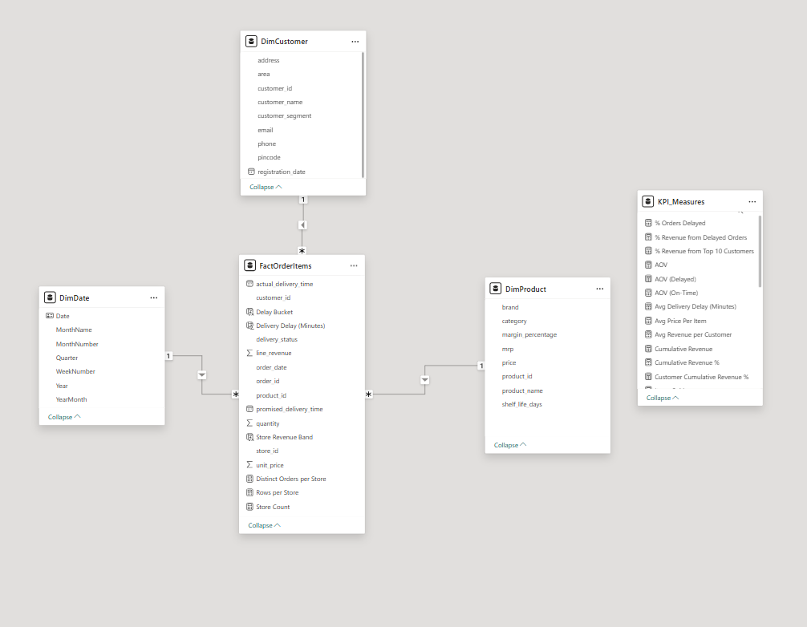
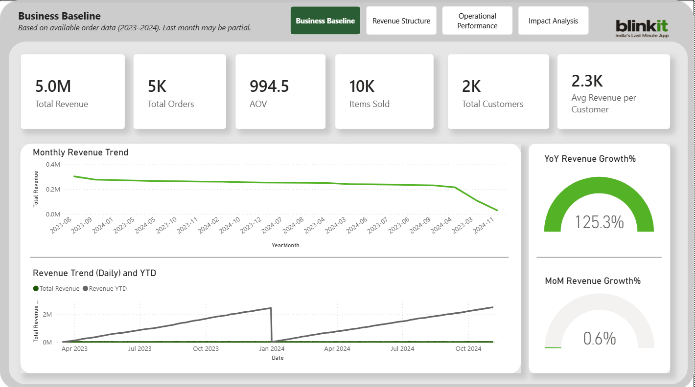
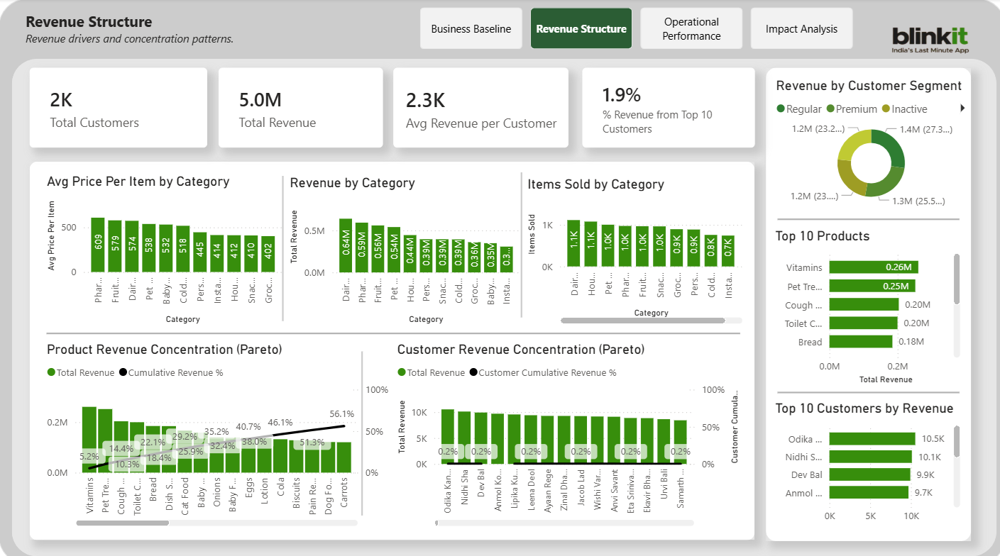
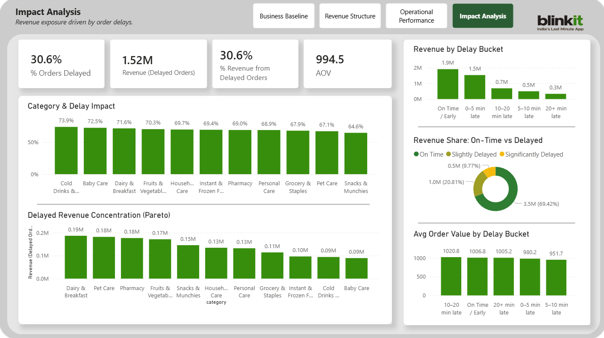
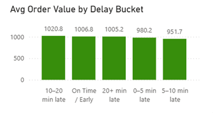

Blinkit Sales & Operations BI Analysis
This project analyzes Blinkit grocery delivery data using a Power BI semantic model.
The goal was to understand revenue drivers, product concentration, and operational
delivery delays affecting customer experience.
Business Questions
- Which products contribute the most to total revenue?
- How concentrated is revenue across top products?
- Do delivery delays impact average order value?
- Which stores contribute most to delayed orders?
Data Model
The analysis was built using a star schema to create a scalable semantic model
for reporting and KPI calculations.

- Fact Table: Orders
- Dimension Tables: Products, Customers, Stores, Delivery
- Model Type: Star Schema
Key Metrics
- Total Revenue
- Average Order Value (AOV)
- % Orders Delayed
- Revenue from Delayed Orders
- % Revenue from Top 10 Products
Dashboard Overview
The Power BI report contains multiple analytical views including sales performance,
product revenue concentration, customer insights, and delivery operations analysis.

Revenue Structure

Revenue Structure
Impact Analysis

Report Pages
- Sales Performance Overview – Executive KPIs including revenue, average order value, and delayed order percentage.
- Product Performance – Product revenue distribution and Pareto analysis identifying top revenue-generating items.
- Customer Performance – Customer segment contribution to total revenue.
- Delivery & Operations – Analysis of delivery delays and operational performance.
- Store Comparison – Store-level delay rates and operational efficiency comparisons.
- Operations Impact – Evaluation of how delivery delays affect revenue outcomes.
Key Insights

- Approximately 30.6% of orders experienced delivery delays.
- Average order value for delayed and on-time orders remained nearly identical.
- Revenue impact from delays is driven by the volume of delayed orders rather than reduced basket size.
- Product revenue follows a long-tail distribution where a small group of products generates a large portion of total sales.
- Operational delays are concentrated in specific stores rather than evenly distributed across locations.
Business Recommendations
- Prioritize operational improvements in stores with the highest delay rates.
- Track delay percentage as a core operational KPI.
- Focus promotions on high-performing products driving revenue concentration.